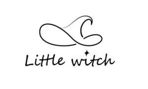

Trade Mark Journal No.2025/022 30 May 2025
UK00004205082 17 May 2025 (14,35)

- Class 14
- Crystal bracelets; crystal necklace; Jewellery made of crystal; Jewellery made of crystal coated with precious metals; Bracelets; Bangle bracelets; Bracelets [jewelry]; Bracelets [jewellery]; Bead bracelets; Silver-plated bracelets; Ankle bracelets; Friendship bracelets; Bracelet charms; Necklaces; Bracelets [jewellery, jewelry (Am.)]; Jewellery rope chain for bracelets; Necklaces [jewelry]; Plastic bracelets in the nature of jewelry; Choker necklaces; Jewellery chain of precious metal for bracelets; Necklaces [jewellery]; Gold plated bracelets; Necklace charms; Silver-plated necklaces; Pendants [jewelry]; Gold-plated necklaces; Charms [jewelry]; Jewelry charms; Charms for jewelry; Flexible wire bands for wear as a bracelet; Clasps for jewelry; Jewellery rope chain for necklaces; Amulets [jewelry]; Necklaces [jewellery, jewelry (Am.)]; Pendants [jewellery]; Wristlets [jewellery]; Brooches [jewelry]; Jewelry brooches; Brooches being jewelry; Closures for necklaces; Pendants; Jewellery rope chain for anklets; Rings [jewelry]; Jewellery chain of precious metal for necklaces; Charms [jewellery]; Charms for jewellery; Jewellery charms; Earrings; Charms [jewellery, jewelry (Am.)]; Clasps for jewellery; Jewelry stickpins; Amber pendants being jewellery; Beads for making jewelry; Amulets being jewellery; Amulets [jewellery]; Amulets [jewellery, jewelry (Am.)]; Jewelry clips for adapting pierced earrings to clip-on earrings; Pins being jewelry; Pins [jewelry]; Jewellery chain of precious metal for anklets; Trinkets [jewelry]; Necklaces of precious metal; Rings [jewellery, jewelry (Am.)]; Scarf clips being jewelry; Rings being jewellery; Rings [jewellery]; Jewelry chains; Chains [jewelry]; Lockets [jewelry]; Brooches [jewellery, jewelry (Am.)]; Pins [jewellery, jewelry (Am.)]; Silver-plated earrings; Ring bands [jewellery]; Jewelry; Brooches [jewellery]; Jewellery brooches; Trinkets [jewellery, jewelry (Am.)]; Beads for making jewellery; Chains [jewellery, jewelry (Am.)]; Pearls [jewelry]; Jewelry pins for use on hats; Key chains as jewellery [trinkets or fobs]; Jewellery in the form of beads; Amberoid pendants being jewellery; Medallions [jewellery, jewelry (Am.)]; Ornaments [jewellery, jewelry (Am.)]; Rhinestones for making jewelry; Jewelry hat pins; Key rings [trinkets or fobs]; Lockets [jewellery, jewelry (Am.)]; Gold-plated earrings; Pearls [jewellery, jewelry (Am.)]; Trinkets [jewellery]; Pins [jewellery]; Pins being jewellery; Key charms [trinkets or fobs]; Jewel pendants; Clip earrings; Hoop earrings; Pearls [jewellery]; Jewellery chain; Lockets [jewellery]; Diamond jewelry; Bangles; Gold plated brooches [jewellery]; Gold plated earrings; Agate as jewellery; Paste jewellery [costume jewelry [Am.]]; Paste jewellery [costume jewelry (Am.)]; Costume jewelry; Jade [jewellery]; Jewellery; Earrings of precious metal; Costume jewellery; Jewellery chains; Chains [jewellery]; Wire of precious metal [jewellery, jewelry (Am.)]; Cabochons for making jewelry; Jewelry hatpins; Jewellery hat pins; Semi-precious gemstones; Semi-precious stones; Precious and semi-precious stones; Jewellery in semi-precious metals; Artificial stones [precious or semi-precious]; Precious and semi-precious gems; Jewellery fashioned of semi-precious stones; Jewellery made of semi-precious materials; Semi-precious articles of bijouterie; Ornaments, made of or coated with precious or semi-precious metals or stones, or imitations thereof; Gemstones; Precious gemstones; Spinel [precious stones]; Synthetic stones [jewellery]; Chalcedony used as gems; Synthetic precious stones; Jewellery incorporating precious stones; Tourmaline gemstones; Tanzanite being gemstones; Jewellery stones; Gemstones, pearls and precious metals, and imitations thereof; Artificial gemstones; Jewellery made of precious stones; Jewellery fashioned from non-precious metals; Natural gem stones; Jewellery in precious metals; Jewellery of precious metals; Unwrought precious stones; Artificial gem stones; Precious stones; Jewellery being articles of precious stones; Articles of jewellery with precious stones; Jewellery fashioned of precious metals; Imitation precious stones; Cuff links made of precious metals with precious stones; Articles of jewellery with ornamental stones; Artificial jewellery; Jewellery being articles of precious metals; Cases of precious metals for jewels; Sapphires; Olivine [gems]; Precious jewels; Natural pearls; Jade; Processed or semi-processed precious metals; Cuff links of precious metals with semi-precious stones; Cabochons; Jewellery incorporating diamonds; Cuff links made of precious metals with semi-precious stones; Opals; Emeralds; Jewellery in non-precious metals; Statues and figurines, made of or coated with precious or semi-precious metals or stones, or imitations thereof; Topaz; Gems; Cabochons for making jewellery; Charms [jewellery] of common metals; Jewelry charms in precious metals or coated therewith; Chain mesh of semi-precious metals; Chain mesh of precious metals [jewellery]; Semi-finished articles of precious stones for use in the manufacture of jewellery; Platinum jewelry; Jewellery incorporating pearls; Jewellery made of precious metals; Articles of jewellery coated with precious metals; Lapel pins of precious metals [jewellery]; Precious jewellery; Chains made of precious metals [jewellery]; Peridot; Jewels; Articles of jewellery made of precious metals; Identification bracelets of precious metal [jewelry]; Threads of precious metal [jewellery, jewelry (Am.)]; Jewellery made of plated precious metals; Figurines for ornamental purposes of precious stones; Chalcedony; Diamonds; Statuettes made of semi-precious metals; Jewellery plated with precious metals; Jewellery coated with precious metals; Gold jewellery; Jewelry (Paste -) [costume jewelry]; Paste jewelry [costume jewelry]; Cloisonné jewellery [jewelry (Am.)]; Cloisonné jewelry; Ivory [jewellery, jewelry (Am.)]; Jewelry caskets; Shoe jewelry; Crucifixes as jewelry; Ornaments [jewellery]; Jewelry boxes; Ivory jewelry; Cameos [jewelry]; Silver thread [jewellery, jewelry (Am.)]; Gold thread [jewellery, jewelry (Am.)]; Pet jewelry; Identification bracelets [jewelry]; Hat jewelry; Imitation jewelry; Jewelry for pets; Jewellery, including imitation jewellery and plastic jewellery; Items of jewellery; Jewellery items; Jewelry boxes of metal; Jewelry findings; Cloisonne jewellery; Fashion jewellery; Leather jewelry boxes; Pewter jewellery; Jewelry for the head; Decorative brooches [jewellery]; Jewellery caskets; Paste jewelry; Jewelry cases; Cloisonné jewellery; Jewelry boxes of precious metals; Jewelry caskets of precious metal; Bracelets made of embroidered textile [jewelry]; Jewelry boxes of precious metal; Shoe jewellery; Silver thread [jewelry]; Women's jewelry; Gold thread jewelry; Gold thread [jewelry]; Plastic costume jewellery; Musical jewelry boxes; Children's jewelry; Wire of precious metal [jewelry]; Jewellery products; Crucifixes of precious metal, other than jewelry; Jewellery for personal adornment; Sapphire; Olivine [peridot]; Emerald; Opal; Diamond [unwrought]; Gold earrings; Jewelry of yellow amber; Rings [jewellery] made of precious metal; Gold necklaces; Statuettes made of semi-precious stones; Jewellery of yellow amber; Presentation boxes for gemstones; Wire of precious metal [jewellery]; Sterling silver jewellery; Silver earrings; Rings [jewellery] made of non-precious metal; Agate [unwrought]; Unwrought agate; Threads of precious metal [jewelry]; Jewellery made of non-precious metal; Semi-worked precious metals; Figurines of precious stones; Crucifixes of precious metal, other than jewellery; Medallions made of non-precious metals; Jewellery caskets of precious metal; Jewellery boxes of precious metals; Threads of precious metal [jewellery]; Figurines of precious or semi precious stones; Bracelets of precious metal; Jewellery cases of precious metal; Precious metals; Small jewellery boxes of precious metals; Jewellery coated with precious metal alloys; Busts of precious metals; Precious metals, unwrought or semi-wrought; Medallions made of precious metals; Jewelry cases of precious metal; Ingots of precious metals; Statues of precious metals; Ornamental sculptures made of precious metal.
- Class 35
- Online retail relating to semi-precious and gemstones; retail store services in relation to crystals and semi-precious stones; retail services via a global computer network; sales promotion for jewellery; advertising and marketing services for jewellery; retail services in relation to precious stones; retail store services featuring crystals and gemstones and semi-precious stones; Wholesale services relating to jewelry; Retail services in relation to jewellery; Online retail services relating to jewelry; Retail services relating to jewelry; Wholesale services in relation to jewellery.
Chongqing Xingshe Cultural Communication Co., Ltd.